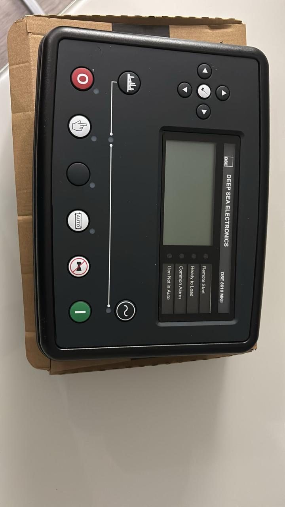
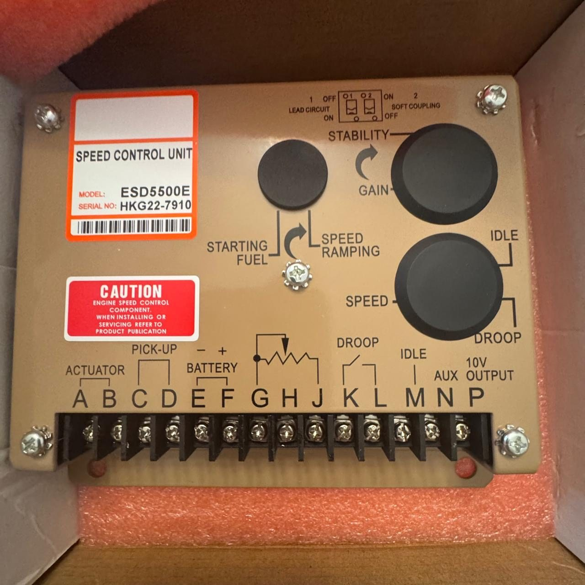

Scope of work
- AVRs and excitation components, rotating diodes, varistors
- Generator controllers, protection units and synchronizers
- Pressure, temperature, level, flow and vibration sensors
- Protection relays, transducers, digital instruments
- I/O cards, power supplies, gateways and network components
- Part identification from a photograph, nameplate or drawing
- Current-equivalent proposals for obsolete items
- Vessel-specific critical spares list
Typical symptoms & failures
- A component with no readable nameplate and no drawing
- A part no longer manufactured with no obvious equivalent
- A spares list never updated after a retrofit
- An urgent requirement with the vessel waiting
What you receive
- Documented part identification before ordering
- A proposal with alternatives and a clear genuine / equivalent distinction
- A critical spares list tailored to the vessel
- Support with fitting and configuring the part
Equipment & protocols
- DEIF and other generator-control manufacturers' spares
- AVRs and excitation components for marine alternators
- Marine-specification industrial sensors and instruments
- PLC, HMI and automation network components
From the field


Frequently asked questions
Can you identify a part from a photograph alone?
Often yes. Send a photo of the nameplate and of the part in situ, plus the vessel type — identification starts there.
Do you supply genuine parts only, or equivalents too?
Both, stated explicitly. For protection devices and anything class-related we recommend genuine.
Do you also fit the part?
Yes. A controller or AVR without correct configuration is just a new box with the same problem.